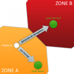
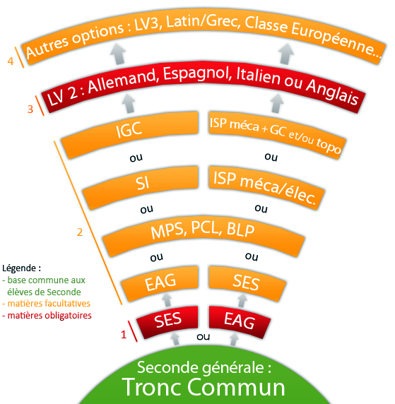
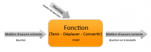
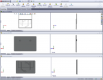
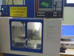
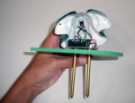
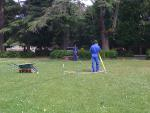

Je vous souhaite la bienvenue sur mon premier article concernant l'orientation pour la Seconde générale en France. Celui-ci a pour cible les élèves souhaitant réaliser un Bac général ou technologique pour déboucher principalement sur l'informatique, en raison de la dominante du site.
Si vous lisez ce tutoriel c'est que vous êtes probablement en Seconde devant un choix assez difficile à faire, faire un choix entre une Seconde SES ou EAG, et de choisir vos trois heures d'options.
Tout d'abord, sachez qu'en Seconde, ce choix n'est pas déterminant pour votre Première. Il est tout à fait possible de changer par la suite en Première, même si cela implique probablement des efforts supplémentaires. Cependant, tout cela sera approfondi par la suite.
Aussi, il faut savoir qu'il existe un nombre très important de combinaisons d'options tel que SES + SI, SES + EAG, EAG + PCL, … Ainsi, veillez à bien vous renseigner sur celles proposées par vos lycées pour choisir le lot qui vous intéresse le plus.
Ce tutoriel n'a pas pour but de vous dire « si vous voulez faire tel métier, faites ce Bac », il n'a pas de réelle vision postbac, la Seconde n'ayant pas de réel impact sur la poursuite des études et les acquis à avoir pour la suite ne sont pas nombreux. Les parcours types et les témoignages vous racontant ce qui sert ou non par la suite ne sont pas compris dans ce tutoriel, ceci étant irréalisable, vu le nombre de possibilités de parcours et la diversité des métiers de l'informatique.
La philosophie du tutoriel est de présenter la Seconde… par un élève de Seconde. La vision étant la plus proche de la réalité, cela a plus d'intérêt et s'avère être plus parlant à un élève que lorsque l'option est présentée par une personne qui ne l'a jamais faite, mais en parle quand même (livres d'orientation, pour ne citer qu'eux).
Ainsi, si vous aussi vous souhaitez partager vos expériences, options et autres sur la Seconde, ma boîte à messages privés vous est ouverte. ;) Cela permet de continuer dans la mentalité du tutoriel, de l'améliorer, le rendre plus juste et plus complet. Vos avis sont toujours les bienvenus. ;)
En sortant du collège, il vous faudra choisir un nouvel établissement (si l'actuel ne fait pas lycée) et ses options. Ce choix n'est pas à prendre démuni de renseignements et mérite une solide réflexion quant au choix de l'établissement.
Si vous avez l'intention de poursuivre votre étude jusqu'à un Bac Scientifique, sachez qu'il existe 3 branches.
La première et la plus connue : l'option S-SVT. Celle où l'on a l'enseignement de détermination SVT. Oui, il faut savoir que c'est bien une option et non ce n'est pas l'unique et seule branche du Bac S, contrairement à ce que pensent trop de personnes. :p
La seconde, qui est celle que je vais détailler le plus dans ce tutoriel, est la branche S-SI, un peu moins courante vu qu'elle demande des moyens très importants en machines onéreuses et personnels qualifiés.
La dernière, assez rare : la branche scientifique biotechnologie. Cette branche sera un peu oubliée de ce tutoriel en raison du manque de retour que j'ai dessus. Cependant, si vous sortez de cette branche, je serais heureux de recevoir votre témoignage. :)
Pour la première branche, la SVT est inscrite dans le tronc commun obligatoire, donc il n'y a pas d'options spécifiques à choisir. Pour les deux suivantes, il est recommandé (même si cela n'est pas obligatoire) de choisir l'option Science de l'Ingénieur ou Biotechnologie.
Pour suivre la filière ES, sachez que depuis la rentrée 2010, une option économique est obligatoire. À savoir les Sciences Économique et Sociale ou l'Économie Appliquée et Gestion. Pour intégrer une Première ES, choisir l'option SES s'avère être un bon choix. Qui peut être complété par l'option de votre choix.
Quant à la filière L, la nouvelle réforme vous donne beaucoup de liberté. Malgré l'obligation de prendre une option économique, vous pouvez choisir en option des matières telles que Littérature et monde contemporain ou Art. ;)
Si vous êtes collégiens, tâchez de vous renseigner un maximum sur les lycées de vos environs. Bien souvent les parents ont tendance à choisir pour vous le lycée le plus proche, sans forcément prêter attention aux options. Si une option vous intéresse tout particulièrement, faites en sorte de trouver le lycée qui vous correspond. ;)
Petit message que je me devais de faire, car en effet trop de Secondes de mon entourage sont allées dans un lycée de proximité et finalement, repues par la SVT et la campagne, tentent d'intégrer une Première SI dans les grands lycées de ville.
La carte scolaire
Dans l'esprit de beaucoup de français, la carte scolaire a été supprimée. Détrompez-vous, elle est encore bel et bien présente !
Mais avant toute chose, qu'est-ce que la carte scolaire ? Mise en place depuis 1963, la carte scolaire est une initiative de l'Éducation Nationale de l'époque pour réduire l'inégalité des chances de réussite. Elle zone les élèves selon le lieu de leur habitation et leur permet d'accéder aux lycées de cette zone. Ainsi, si un élève de zone A souhaite accéder à un lycée de zone B, sa demande sera refusée si un lycée de zone A correspond également à la demande de l'élève.
Seulement, la carte scolaire n'est pas infranchissable. Parfois pour accéder à un lycée mieux desservi ou plus réputé, il peut être intéressant de faire une demande de dérogation. Il s'agit d'une feuille montrant qu'en théorie vous n'avez pas accès au lycée B et que le changement de zone est donc à justifier.
Pour passer outre la carte scolaire, généralement une option rare suffit. Mais le cas échéant, plusieurs raisons sont valables comme un meilleur réseau de transport, des parents ou de la famille résidant à proximité, un internat… Ce ne sont pas les raisons qui vous manqueront si vous êtes motivés. Il faut également savoir qu'un élève de la zone du lycée a plus de chance d'y accéder qu'un élève y accédant à l'aide d'une dérogation.
Pour l'histoire, en décembre 2007, suite aux promesses de Nicolas Sarkozy lors des élections présidentielles, François Fillon a annoncé la fin de la carte scolaire. Mais en réalité, elle n'a jamais été abolie, juste assouplie.
Avant d'attaquer avec précision la description des options disponibles pour votre année de Seconde, une petite explication simplifiée du système s'impose.
Pour que je n'aie pas à revenir dessus plus tard, il faut savoir que le système d'options de la Seconde est très compliqué, et c'est pourquoi toute une sous-partie y est consacré. J'ai tenté de simplifier au mieux pour arriver à résultat de complet tout en étant présenté de façon claire.
Ainsi je vous présente le schéma « Options à la carte ». ;)

Normalement le schéma est assez parlant mais je préfère compléter la légende :
Tout d'abord, choisissiez l'enseignement d'économie que vous préférez entre la SES et l'EAG. L'enseignement économique se limitera à la Seconde sauf dans le cas du choix de l'enseignement SES et une Première ES.
En restant dans la lignée de votre option choisie en 1, vous pouvez prendre une option en orange parmi les quatre proposées (liste non exhaustive). ;)
Étape du choix de la LV2, que vous avez depuis la 4e. Il s'agit le plus souvent de l'Espagnol, de l'Allemand voir de l'Italien. Il peut s'agir de l'Anglais si vous ne l'avez pas choisi en LV1. Depuis la réforme, cette option est obligatoire pour la Seconde.
Pour finir, les autres options que vous pouvez choisir en complément.
Je vous épargne les choix qui sortent de l'ordinaire tels que MPS + LV2, SES + Latin (en option Lourde), ou autres... Sinon cela complique énormément le schéma.
Une fois vos choix faits, comparez les offres des lycées des alentours pour trouver celui qui correspond le mieux à votre demande. Il peut être intéressant de se renseigner sur les transports, leurs prix et le temps qu'il vous faudra pour arriver au lycée. Voir aussi des petits détails auxquels on ne pense pas toujours et qui sont pourtant importantes tels que le prix du repas à la cantine.
Pour en savoir plus sur les abréviations mystérieuses, rendez-vous dans les chapitres suivants. :)
Pour les impatients, les voici : SES, EAG, MPS, PCL, BLP, SI, IGC, ISP méca + GC et/ou topo., ISP méca/élec., LV2. ;)
Si vous décidez de suivre un Bac S-SI en Seconde, il vous est conseillé de passer par une des deux options occupant chacune trois heures dans votre emploi du temps. J'ai nommé la SI (Sciences de l'Ingénierie) et la CPI (Conception de produit industrielle).
Sciences de l'Ingénierie
La SI, universelle quel que soit votre lycée, remplace dorénavant l'ISI de Seconde, enseignée avant la rentrée 2010. L'ISI changeait de nom en Première et Terminale pour s'appeler SI. Fondamentalement, la réforme ne change pas beaucoup de choses et l''année de Seconde reste divisée en trois parties réparties sur les trois trimestres.
Première partie
Au début de l'année, vous étudierez en premier lieu l'analyse du schéma bloc, c'est-à-dire comment est écrite une fonction, quelles sont les matières d'œuvre qui entrent et sortent, des choses assez simples mais qui serviront tout au long de l'année dont voici ci-dessous un exemple.  Après on passe à des choses plus concrètes, comme notamment les capteurs avec leurs symboles, leur utilité et les algorithmes et équations qui en découlent. Ce sont vos premiers pas avec les maquettes et systèmes concrets. Cette partie est assez conséquente dans la mesure où les capteurs sont utilisés dans de très nombreux domaines et où l'exploitation des données qui en sont issues est une chose relativement nouvelle (de la Technologie niveau Collège bien plus avancée en somme).
Deuxième partie
Puis lors du changement pour la salle informatique, nous avons abordé SolidWorks, un logiciel de CAO. A noter que le logiciel peut différer selon votre lycée. C'est probablement la partie la plus intéressante de l'ISI et celle qui vous servira le plus lors de votre passage à votre Première, puisque vous serez censés savoir utiliser le logiciel. C'est également l'apprentissage d'un logiciel industriel, c'est-à-dire qu'il est utilisé en entreprise et donc que c'est un gros plus de savoir s'en servir. En suivant la schématisation d'un objet avec un nombre de côtes (longueurs) bien défini et utilisable qu'une seule fois, vous devez faire la réalisation 3D de cet objet, pouvant donner lieu à des contrôles sur ordinateur mais également sur papier. En effet, bien que les logiciels de CAO aient remplacé le dessin papier en entreprise, une courte partie du trimestre est dédié à l'apprentissage des règles de mise en plan sur papier d'un objet, ce qui est assez simple à assimiler et toujours bon à prendre.
Troisième partie
La dernière partie porte sur les mouvements dans l'espace. Ainsi, on étudie les différents types de liaisons avec les translations et rotations. C'est une belle prise de conscience des différents mécanismes de « contact » de quasiment tous les systèmes nous entourant, et c'est une partie qui est très utile pour la dernière partie mini-TPE. De plus, une partie du chapitre se concentre sur les moteurs à différentes énergies (électriques ou pneumatiques), les vérins ainsi que leurs fonctions.
En clair, ce trimestre contient les notions à savoir pour votre Première S-SI.
Partie bonus
Prototypage d'une carte de carAprès avoir fini ces trois parties, il est probable que votre lycée vous propose une séance de mini-TPE en quatre ou cinq séances. Vu le peu de temps dont vous disposez, l'objectif est simple, faire un objet sous SolidWorks et l'usiner. Bien sûr, il faut trouver le contexte et son utilité, mais ça c'est votre travail (ou celui du prof, ça dépend) et c'est vraiment une bonne expérience. Sincèrement, profitez au maximum de cette chance. Si vous avez une idée de projet d'objet, parlez-en à votre professeur, ça ne coûte rien. Tant que ça tient la route et que ce n'est pas irréalisable, en montrant que cela vous intéresse il vous accompagnera jusqu'à la fabrication voire plus. Pour ma part, et vu le peu de temps dont je disposais, je n'ai eu le temps que d'avoir un prototypage rapide (et c'est sympa de recevoir l'objet qu'on a inventé depuis zéro) mais pour certains, cela va jusqu'au brevet de l'invention (relativement courant dans notre lycée). ;)
Informatique et Systèmes de Production
Introduction
Tiens il y a « informatique » dedans, c'est peut-être le bon filon non ?
Ainsi, ayant fait la quasi-totalité des options disponibles en ISP, je vais pouvoir vous les présenter. Sachez que leur nombre dépend de ce que peut proposer votre établissement et que le plus souvent, vous ne rencontrerez que les deux premières.
ISP mécanique
L'une des deux parties principales, c'est la seule quasiment obligatoire. La partie informatique de cette option est notable, mais reste moins présente que dans la partie suivante. Vos activités vont dépendre des moyens de votre lycée mais dans la plupart des cas, vous utilisez CamWorks comme extension de SolidWorks, qui vous permettra d'usiner.
Tout d'abord, vous serez mis dans un contexte où il vous sera demandé de réaliser toutes les étapes nécessaires pour arriver à l'objet physique, en partant d'une réalisation 3D. En fait, vous vous retrouvez dans la peau d'un employé chargé de l'usinage des produits pour votre entreprise. C'est un mix entre la continuité de l'ISI et l'utilisation des machines industrielles. Machines que vous allez apprendre à programmer et à utiliser en presque totale autonomie.
ISP électronique
ISP mécaniqueLa partie informatique. Ici presque pas de machine(s), si ce n'est le nécessaire pour les circuits imprimés. C'est un avant-goût de la STI électronique et la suite de la Technologie du collège, bien que nous n'ayons pas tous eu les mêmes bases.
En principe, on travaille en parallèle avec l'ISP mécanique, pour réaliser la partie électronique du projet de création d'un objet. Exemple : pour faire un dé électronique, la coque en plastique sera usinée en mécanique alors que le circuit imprimé sera conçu en électronique.  ISP électroniqueVous aurez le droit à des cours sur le câblage, savoir comment conduire l'électricité à l'intérieur d'un circuit imprimé, les différentes possibilités. La révision du classique, comment calculer la résistance en Ohm d'une résistance électrique. Des choses plus manuelles, comme la fabrication (si l'établissement dispose du matériel) du circuit imprimé, son perçage, le soudage des composants et pour finir le test qualité de la plaque (si le système fonctionne ou non). Enfin, des parties sur ordinateur sous forme de travaux, tels des quiz, des conceptions de schémas électroniques ou des initiations aux langages de programmation.
ISP génie civil
Option assez spécifique de l'ISP, si vous souhaitez travailler dans le bâtiment par la suite, certains lycées demandent obligatoirement d'avoir fait cette option dès la Seconde. Donc inutile de préciser que dans le cas où vous souhaiteriez rejoindre une Première STI génie civil, cette option est vivement recommandée.
Tout d'abord on y fait de la théorie, très rapidement, pour pouvoir ensuite passer à la pratique. Ainsi, on étudie par exemple un tuyau posé sur un chantier. Vous me direz, c'est bête de regarder un tuyau ! Seulement il nous donne à lui seul toutes les informations à connaître. Eh oui, selon sa matière et sa taille, on peut définir très facilement l'objectif du chantier. Exemple : un large tuyau en béton. Sa matière nous indique qu'il ne peut pas contenir de l'eau potable car le béton est nocif. Il ne peut pas non plus transporter d'eaux usées car le béton pourrait donner lieu à des fuites. Il s'agit donc d'un tuyau destiné, à l'aide de sa largeur, à évacuer les eaux de pluies. En effet, le fait que l'eau soit plus nocive ne change rien et s'il y a des fuites, ce n'est pas trop grave. Aussi, on a également pu tester la résistance du béton, son alliance avec l'armature en métal et ses comportements. Les bases pour pouvoir intégrer une STI Génie-Civil sereinement. La visite des chantiers nous permet également d'apprendre leur fonctionnement : les différentes étapes qui les constituent, les personnes qui défilent sur le chantier, les machines, … On va même apprendre où placer la ou les grue(s).
Après la partie « sur le terrain », votre travail est réparti sur plusieurs étapes, comme la préparation du coffrage à béton, la préparation de ce dernier, jusqu'à la mise en place de la pièce bétonnée. Ainsi, le plus gros du travail est à faire dans l'atelier. On va dehors lorsqu'il faut récupérer du sable ou du gravier, ainsi que pour nettoyer le matériel. Sinon en fin de séquence il y a un compte rendu noté à réaliser. Il s'agit d'expliquer ce que l'on a fait et comment on s'y est pris. Moitié texte, moitié dessin.
ISP topographie
Dernière option spécifique de l'ISP, comme pour l'option GC. Faire de l'ISP topographie permet d'accéder à une Première STI topographie.
Pour ceux qui ne connaissent pas la topographie, il s'agit de l'étude des cartes. Ces cartes sont demandées soit par un particulier (possédant un terrain) soit par une entreprise afin de savoir les caractéristiques du terrain. Ainsi on vérifie l'espace disponible pour la construction, les objets présents comme les arbres, les clôtures, les fils électriques ou tuyaux… C'est très très complet et cela demande un travail assez minutieux. De plus, pour la vraie topographie il faut utiliser des crayons à encre de Chine de différentes épaisseurs et d'autres matériels de précision mais en Seconde, on vous demande uniquement le crayon de bois. ;)
Sur le terrain, le travail consiste à prendre des mesures à l'aide de différents outils allant du simple mètre ruban à l'utilisation de machines de mesure à assistance laser (voir photo). ;)
Si votre lycée est un lieu d'examen de Bac STI génie civil et / ou topographie et que vous avez souscrit à au moins une de ces options en Seconde, attendez-vous à être réquisitionnés comme « Aide ». Votre travail, accompagner les élèves de Terminale pendant l'épreuve. D'un vous n'avez pas le choix ( :p ), de deux vous allez faire des tâches peu valorisantes, comme promener, entretenir et ranger le matériel, ainsi que probablement aider l'élève pris en charge dans ses tâches physiques. Ça vous prend 4 heures dans votre vie, et franchement pour l'avoir fait ça peut être très bien (pour avoir fait topographie avec un gars sympathique), et ce même si ce sont des matières que vous n'aimez pas spécialement, ce ne sont pas des heures perdues. ;)
Mesures Physiques et Informatique
Ah et là, il y a « informatique », c'est bon ?
En effet, la MPI est, en gros, de la physique-chimie sur des ordinateurs. :p
Au programme, acquérir tout d'abord les bases, telles que les différentes lois de l'électronique, comme la numération, la loi d'Ohm, le pont de diode… accompagnées de quelques cours sur l'informatique, comme l'histoire de l'informatique ou le binaire.
Cette option permet d'emmagasiner de nombreuses connaissances en électronique et physique appliquées, pouvant notamment servir en STI. Ainsi, vous aurez peut-être la chance d'aborder des sujets tels que l'apprentissage du langage BASIC, ou l'utilisation d'un logiciel de WYSIWYG.
En fin d'année, comme pour la SI de Seconde, il peut y avoir un mini-projet à accomplir, souvent la création d'un site Web.
Informatique de Gestion et de Communication
Cette option, bien que peu connue, mérite tout de même sa place dans cette partie du tutoriel. En effet, comme l'ISI et l'ISP, l'utilisation de l'informatique prend une place importante dans cette option.
Ici, on apprend les bases nécessaires pour mieux aborder une Première STG : Sciences et Technologies de la Gestion. Très orientée communication et bureautique, vous y apprendrez à utiliser plus en détail Word, Excel, Power Point ou Access, ou encore la suite Office (ou un équivalent gratuit), mais également d'autres logiciels, comme Dreamweaver ou autres logiciels de création de sites Internet (bien que ça soit une partie négligeable de l'année).
Les cours sont répartis en projets importants, dans lesquels il faut utiliser les différents logiciels, un peu comme les TP dans les matières scientifiques, en plus consistant. ;)
Si vous ne souhaitez pas spécialement vous lancer dans la branche de l'informatique, sachez qu'il existe un nombre incalculable d'options, dont les plus courantes sont présentées dans ce chapitre.
La liste est bien évidemment non exhaustive et donc incomplète, mais si vous désirez faire part de votre expérience de Seconde, je suis ouvert à tout témoignage. ;)
Sciences de la Vie et de la Terre (1 heure 30)
Inutile de s'attarder des masses sur cette option, étant donné que c'est la plus populaire des options de 3 heures disponibles en Seconde, et que vous en faites depuis le primaire (qu'on nommait Biologie et Géologie, pour les nostalgiques). ;-P
Le programme de biologie est divisé en deux grands chapitres. Le premier porte sur l'organisme en fonctionnement. C'est-à-dire, en résumé, comprendre comment l'organisme s'adapte à notre rythme ou aux efforts effectués, par le biais de l'analyse de l'air inspiré ou expiré, la prise de la fréquence cardiaque. Et pour finir, le fonctionnement de l'organisme, via la circulation d'air ou sanguine. Le tout accompagné de TP et expériences, cours et définitions à apprendre par cœur. La même qu'au collège.
Sciences Économiques et Sociales (1 heure 30)
Comme son nom l'indique, l'option est divisée en deux études. Celle des sciences économiques, où l'on étudie les entreprises, les chiffres d'affaires, le PIB, les revenus, … Et les sciences sociales, où l'on parle des comportements de la société, des phénomènes de mode et autres.
Durant cette année, vous aborderez dans une première partie l'histoire de la SES, ses fondateurs et sa création, pour ensuite entrer dans le vif du sujet, à savoir les méthodes de calcul, puis les statuts des entreprises.
Tout le programme de Seconde sera revu en un trimestre en Première ES.
Physique Chimie de Laboratoire (3 heures)
Contrairement à la MPI, la PCL est une option qui permet d'approfondir dans la Physique et la Chimie telle une continuité des cours. Cela pour s'avérer être un choix intéressant si vous aimez ces matières ou si vous envisagez une poursuite des études dans ce secteur.
En Seconde, les cours de physique portent sur la dilatation des matériaux, la pression et la force. Tandis qu'en chimie vous étudierez le Ph, les ions et les réactions chimiques de base. Ainsi vous verrez principalement la manipulation du matériel laborantin et des produits. Une partie informatique est néanmoins présente, avec l'apprentissage et l'utilisation des logiciels de graphique et de mesure. Le tout accompagné au préalable de théorie. Comme en Physique-Chimie, vous aurez des TP, dont certains notés.
Biologie de Laboratoire Paramédical (1 heure 30)
Disponible dans très peu de lycée, la BLP est une option complémentaire à la SVT, plus spécialisée dans le monde laborantin. En effet, les heures de cours se passent dans un lycée équipé d'un laboratoire.
Comme dans les matières scientifiques, les cours s'organisent en TP parmi lesquels vous apprendrez à vous servir de toutes les fonctionnalités d'un microscope, en continuité de la SVT. Mais surtout le gros de l'année consiste à l'apprentissage de comment manipuler les bactéries sans se faire contaminer. Savoir les différencier, selon leurs couleurs, fonctions et modes de vies. Jusqu'à les élever en apprenant leur reproduction et l'ensemencement. A savoir que le programme peut être plus orienté physique que chimie/biologie selon l'organisation de votre lycée.
Une option très intéressante pour les élèves qui aiment la SVT, et plus précisément la biologique. C'est un bon choix d'avenir pour un élève voulant poursuivre un Bac S, en spécialisation SVT, mais ils devront s'organiser afin de gérer le travail supplémentaire engrangé par l'option. Travail qui nous demande une certaine autonomie.
Il faut également savoir que, comme la MPI, cette option s'arrête après la Seconde.
Seconde langue vivante (~ 3 heures)
Dans le cadre de votre entrée en Seconde, à moins d'être sûr d'aller en STI/STG, il vaut mieux garder sa LV2 encore une année.</attention>
Généralement, il s'agit de l'allemand, de l'espagnol, de l'italien, ou de l'anglais.
Inutile de s'attarder plus dessus, vous avez normalement votre LV2 depuis la 4e. ;)
Troisième langue vivante (> 2 heures)
Si vous êtes un fana des langues ou si vous souhaitez vous diriger vers un Bac Littéraire par la suite, il peut être intéressant de prendre une troisième langue vivante telle que l'italien, le russe, le chinois… Encore une fois, tout dépend de votre établissement et cela peut être un critère décisif dans votre choix. ;)
Langue morte : Latin / Grec (3 heures)
Pour le latin et le grec, il n'est pas forcément nécessaire d'en avoir fait au collège, sachant que le début reprend les bases acquises au collège. Seulement je doute que de nombreux élèves qui choisissent une des deux langues mortes en option soient dans ce cas. À vous de vous renseigner auprès de l'établissement qui le propose, lors de la journée portes ouvertes par exemple.
Pour le latin, c'est dans la continuité du collège, c'est-à-dire de beaucoup d'études de textes avec un peu de civilisation. En tant qu'option au Bac, il y a un examen à la fin de votre Terminale ne pouvant vous donner que des points bonus. Il s'agit de présenter à l'oral un texte vu au cours de l'année.
Classe européenne (2 heures)
Introduction
Option assez méconnue et pourtant présente dès le collège dans certains établissements, la classe européenne est une option d'approfondissement, le plus souvent en anglais et / ou en allemand. Elle est constituée d'une heure de cours de langue supplémentaire, plus une heure de DNL. Elle peut se continuer jusqu'à la Terminale, et permet d'obtenir un diplôme européen suite à une épreuve supplémentaire au moment du Bac.
Disciplines non linguistiques
Derrière ce nom bien ambigu, on regroupe toutes les matières qui ne sont pas comptées comme des langues. Ainsi on y classe les maths, la physique, l'histoire-géographie, … Dans le cadre de la classe européenne, le cours de DNL se fait dans la langue d'approfondissement.
Le fonctionnement de cette classe est différent selon les lycées, ainsi certains tournent tous les ans, passant des maths à l'SI, puis à la physique, alors que d'autres restent sur l'histoire-géographie et étudient plus précisément l'Europe.
Selon le lycée, cette option peut également donner lieu à un voyage linguistique supplémentaire (Suède le plus souvent).
La Seconde, ah quelle belle année ! Celle de détermination, où l'on peut faire des choix et se faire plaisir. Avec du travail modéré où l'on revient sur le collège, et où il n'y a pas d'examens à la fin. Que du bonheur !
Eh oui, profitez-en bien, car après il vous faudra choisir l'orientation pour la Première et ce, dès le début du mois de mars.
Ce schéma coloré résume bien les différentes étapes prébac disponibles après la Seconde.
C'est bien beau tout ça mais en fait je ne vois pas tellement les différences entre S et STI ?
En effet, le schéma ne peut pas vraiment détailler ce domaine. Le Bac S est un Bac Général, c'est-à-dire que l'on continue de bosser dans les matières scientifiques, mais également dans les matières générales telles que le français, l'histoire-géographie, … Pour le Bac STI, c'est un Bac Technologique. Ainsi on continue également les matières scientifiques, mais on laisse plus de côté les autres matières. C'est un début de formation utile postbac. Il n'est pas rare que les élèves de STI se débrouillent mieux dans certaines matières scientifiques que ceux de S, alors que ces derniers se rattrapent par un approfondissement dans les matières générales.
Dans l'idéal, si vous voulez continuer loin dans vos études et que continuer dans les matières générales n'est pas un problème pour vous, la Première S est envisageable. Si vous avez des difficultés dans les matières générales, que vous souhaitez passer plus de temps sur les matières scientifiques et que vous n'envisagez pas des études spécialement longues, choisir la voie d'un Bac STI est peut-être mieux.
Aussi, il est à noter qu'un bachelier S aura un poids plus important qu'un STI lors de l'entrée en école d'ingénieurs par exemple ou qu'il aura accès à de plus nombreuses CPGE qu'un STI.
Et si en Seconde j'ai fait l'option SVT, sans avoir fait SI ou ISP, est-ce un problème pour entrer en Première S-SI ?
Bien que préférable, ce n'est pas obligatoire, la Seconde étant une année de détermination. Ainsi vous pouvez être acceptés. Par contre, un rattrapage quelconque sera nécessaire. Il peut s'agir soit de cours supplémentaires, soit d'une remise à niveau en début d'année de la classe par votre professeur ou soit une aide individuelle par un élève plus expérimenté. ;)
Comme précisé dans le chapitre précédent, si vous décidez de continuer dans la SVT et de faire un Bac S-SVT, vous pourrez toujours travailler dans l'informatique, votre diplôme aura la même valeur et vous pourrez intégrer une école d'ingénieurs ou un autre établissement accessible aux SI.
Voilà c'est la fin de ce tutoriel. Seulement non, ça ne s'arrêtera pas là. ;)
Un nouveau tutoriel sur la Première Scientifique est en cours de validation. Projet mené par Oxyray et moi-même. D'ici quelques temps, il est probable que l'on voit l'apparition de tutoriels sur d'autres filières.
Si vous souhaitez y participer, je vous proposer un topic a été mis en place ici-même afin de recevoir vos demandes de participations. Si ce tutoriel vous a plu, n'hésitez pas. ;)
En attendant, des mises à jour mineures sur l'orientation des Secondes, et je prends toujours vos présentations d'options, retours d'expérience et photos pour illustrer si vous souhaitez partager tout ça avec la communauté.
Avant de vous donner rendez-vous pour l'année prochaine, je voudrais remercier tous ceux qui m'ont permis de compléter ou d'améliorer mon tutoriel, pour arriver au résultat actuel à savoir :
Mickael Knight qui m'a confié l'existence de la future partie éducation avant les annonces officielles. Ce qui eu pour effet de me donner envie de rédiger ce tutoriel et ceux à venir.
M@teo21, pour son accord sur la création du tutoriel.
Nanoc, le validateur en charge de mon tutoriel, avec lequel j'ai aimé discuter autour de la philosophie du tutoriel.
{kind=link}
{kind=link}
{kind=link}
{kind=link}
{kind=link}
{kind=link}
{kind=link}
{kind=link}
{kind=link}
{kind=link}
{kind=link}
{kind=link}